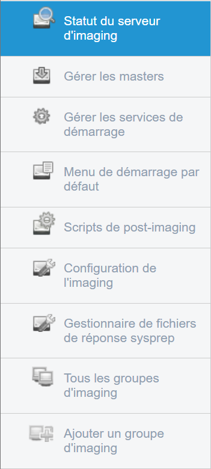
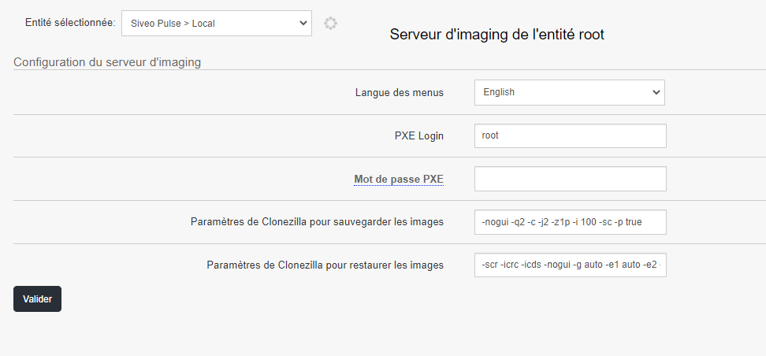
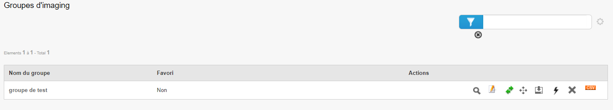
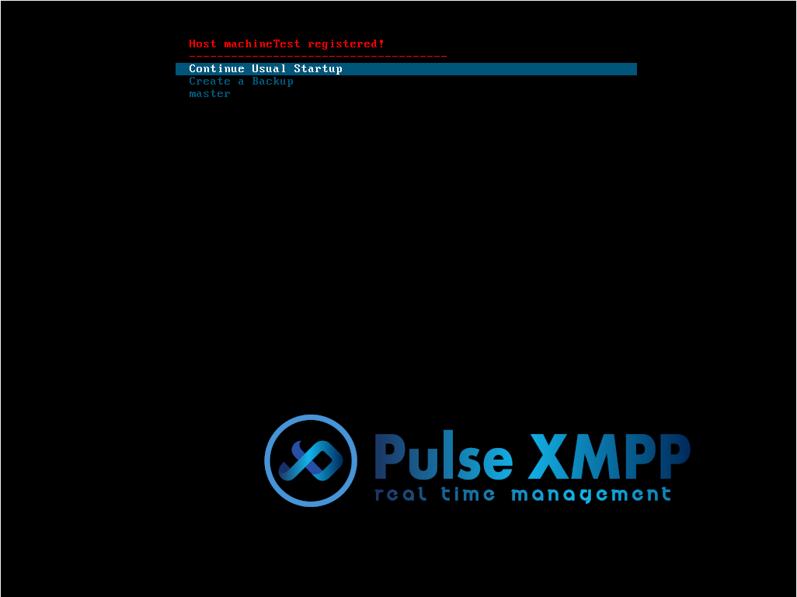
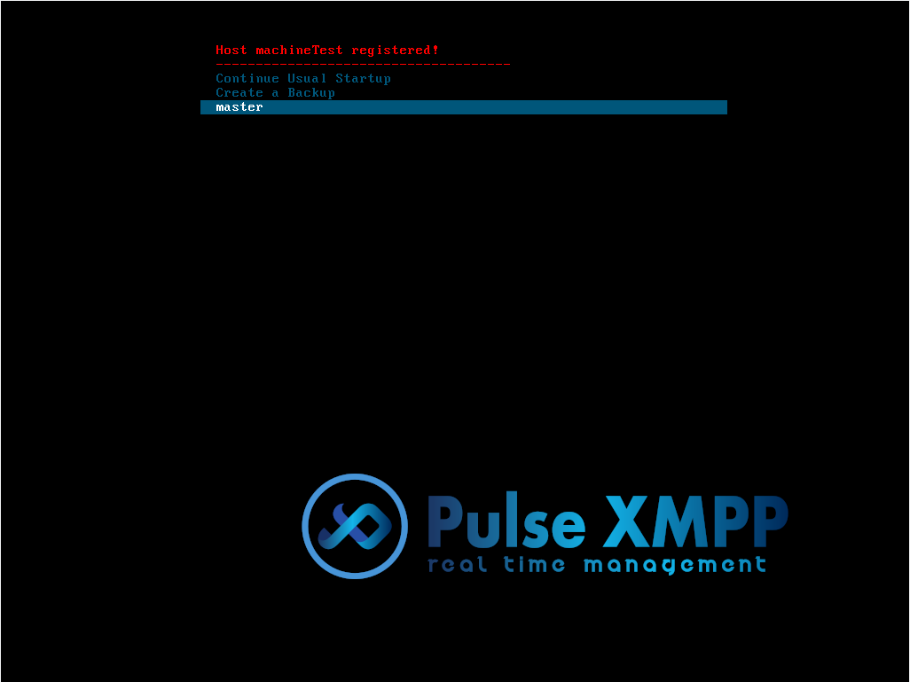

Imaging¶
This section concerns the imaging part of the Pulse tool, including iPXE boot, the home page, and various options.
Interface¶
When we arrive at the Imaging menu on the main screen, we find ourselves on the imaging server status page.

This page provides information about the imaging server’s status, including available disk space, server load, and entity statistics.
On the left side of the screen, there is a menu with different sub-menus that make up the Imaging menu:

Imaging server status: Displays the status of the imaging server; Manage masters: Allows managing different machine masters; Manage boot services: Manages services present in « Pulse Utilities » during PXE boot; Default startup menu: Configures the default startup menu; Post-imaging scripts: Adds scripts to execute after imaging; Imaging configuration: Configures the imaging server (e.g., adding PXE password); Sysprep answer file manager: Generates a custom Sysprep answer file for Windows; All imaging groups: Displays different imaging groups; Add imaging group: Creates a group of different machines to assign imaging to them.
Manage masters¶

In this menu, we can manage masters using different actions:
Remove from startup menu: Removes the master from the machine’s startup menu; Create a bootable ISO: Creates an ISO of the master; Edit master: Edits the master: its label, description, or the order of different actions; Clone master: Clones the master; Display targets using this image: Displays machines using the image.
Manage boot services¶

This section manages services present in « Pulse Utilities » during PXE boot. To add a service, click on the « Add service to default startup menu » action.
A pop-up appears with different options:

Select the desired options and click « Validate ».
To remove a service, click on the « Remove service from default startup menu » action.
Default startup menu¶

This page contains different options of the default startup menu. You can change their order or edit them (e.g., display or hide them).
Post-imaging scripts¶

Post-imaging scripts are scripts that will be executed directly after machine imaging. For example, you can put a script that shuts down the machine once imaging is done, or a script to copy the Sysprep answer file.
Imaging configuration¶

This page allows modifying different imaging options. You can change menu language, PXE login, PXE password, or Clonezilla settings for image backup and restore. Attention! Regarding Clonezilla options, only modify them if absolutely necessary. Incorrect configuration would render imaging non-functional.
Sysprep answer file manager¶

This page generates and modifies Sysprep answer files. Sysprep allows generalizing a Windows installation. Generalizing the image removes computer-specific information, such as installed drivers and the computer’s security identifier (SID). In this generator, you can specify a product key, whether to wipe the disk or not, extend the OS partition, adjust security settings, etc.
In the « Sysprep List » tab, you’ll find the different Sysprep files we’ve generated. You can view, modify, or delete them.
All imaging groups¶

This page displays different imaging groups.
Add imaging group¶

In this menu, we can create an imaging group by adding machines to it. Creating an imaging group allows applying the same imaging configuration (thus the same PXE menu) to several machines and launching an image deployment in multicast to a group of machines.
Initial Boot on an Unregistered Machine in Pulse¶
When booting a machine via PXE boot (Pre-boot eXecution Environment, which allows a workstation to boot from the network by retrieving an operating system image from a server), we have several options available.
First, when the machine is not registered (Identified by the message « Host is NOT registered »):
The default option is « Continue Usual Startup », which boots the machine normally. This default option will be automatically selected after a certain time unless a key is pressed.

The second option, « Register as Pulse client », allows registering the machine as a Pulse client. An inventory of the machine will be performed, and it will be integrated into the Pulse tool.

Once this option is selected, you’ll be prompted to enter the machine’s name:

A message follows asking if the name is correct, to avoid any mistakes (type « Y » to continue or « N » to correct the name)

Machine Registered in Pulse¶
Once the machine is registered (Identified by the message « Host _hostname_ registered! »), we can:
Boot the machine normally, with the option « Continue Usual Startup » (similar to the initial boot option)

Create a backup of the machine

Or restore an image previously created to the newly created machine. In our example, the master is called « master »
